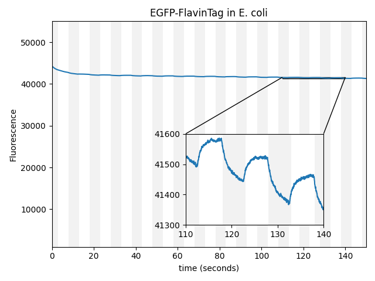
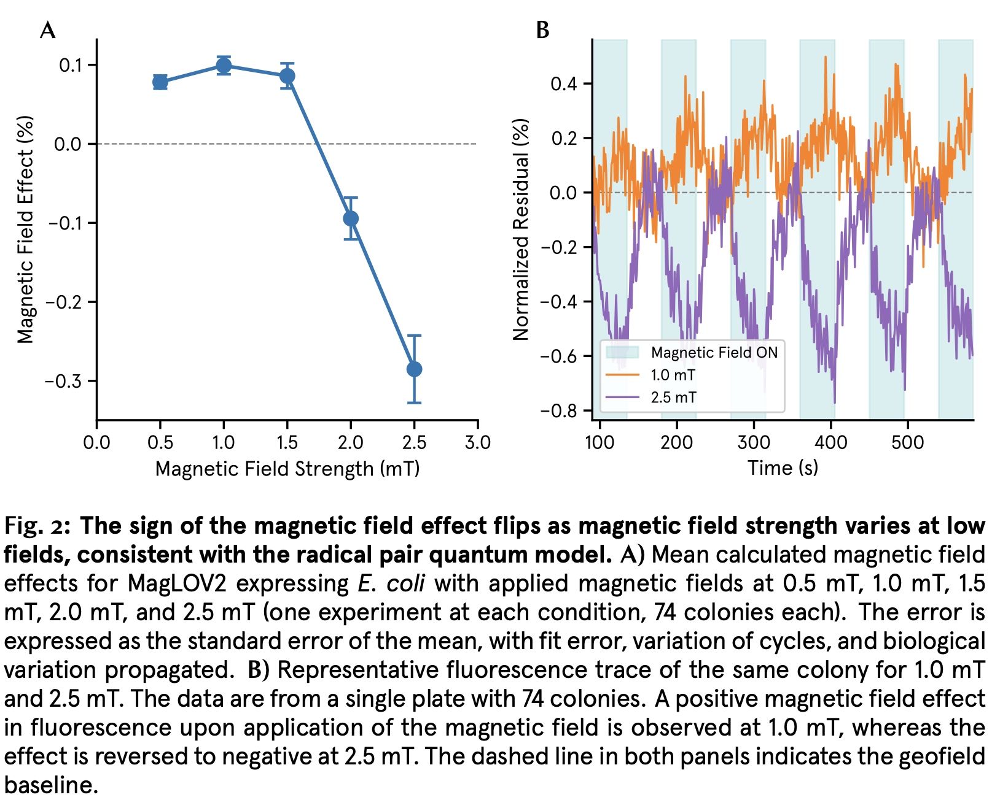

Further readings and notes for my conversation with Andrew York and Maria Ingaramo.
Using Magnets to Kill Cancer with Precision
- The whole idea really started with Adam Cohen; he had an interest in magnetogenetics. Interest in the field flared in 2015 because people figured out that this might be how birds navigate or sense magnetic fields. Cells have a lot of iron and would align in magnetic fields.
- Meister pushed back significantly on this work, arguing that you can’t actually tweak tiny bits of iron that way, and so on. The field went into a “dark age” for a while.
- Adam Cohen comes in and points out that there are some small molecule dyes that respond to magnets, and that this was something objective and measurable. It was real. So Nonfiction Labs took this idea; Maria wanted to know if she could also get biological proteins to change fluorescence intensity in magnetic fields.
- Directed evolution experiments led to AsLOV2.
- With magnetogenetics, it’s like optogenetics, but these proteins don’t normally respond to magnets at all; it’s a new mechanism that is being engineered or evolved by human hands.
- A lot of biology is done by discovering natural mechanisms, but magnetogenetics seems to be somewhat of an exception. Isn’t that a bit strange?
- Adam Cohen has proposed mechanisms, but the mechanism is still somewhat poorly understood.
- “Can you control useful biology with magnets?” was a guiding question early on. It seemed like a narrow path was there if the physics worked out. The company was founded to take this same idea of magnetic control and apply it.
- Magnetically inducible therapeutics or enzymes?
- How do they spend their time? How do they follow where the market is and shape their allocation between basic R&D and trying to make money? Is most effort going toward rational engineering for this effect, such that you can co-opt it into any system?
- Magnetogenetics just means it’s genetically encoded; so this isn’t really magnetogenetics, right? Optogenetics has been enormously useful for basic R&D, but you can’t do a lot of therapeutic work with it.
- Mostly focused on antibodies.
- The physical limits of various modalities is really interesting to talk about. Where are magnets better than ultrasound, and better than light?
- You can either make new drugs with new mechanisms that are only active at the tumor site, or attach this new mechanism to already-approved drugs and just make them more precise at tumor sites. Interesting to think about; you’d have to go back through approval, right?
- It could make new targets become viable because they could be activated more specifically. “I wish I could hit this target, we have great data on it, but the toxicity isn’t going to work out.” Perhaps magnetogenetics could help there. So presumably they are doing basic R&D to figure out how to control these mechanisms reliably, such that they can license the IP to any pharma company. Ask about this. Try to move the target question away from where proteins go naturally and all this complex biology that is irreducible in the trial — can we instead make the problem simpler and easier to simulate?
- Would pharma companies be open to taking this leap?
- Also spends a lot of time working with academic labs (besides R&D); academics get to do science and get the paper, and Nonfiction Labs gets to figure out how these things work in mice, etc.
- For the first time, there’s a way to control biology that doesn’t affect healthy tissue and makes tissue fully transparent, basically. As a research tool, it is amazing. Isn’t focused ultrasound basically just as good, or maybe even better?
- On magnetically inducible enzymes: they engineered a luciferase in this way. Luciferase emits photons; lots of critters make it. Magnetically controlled luciferase is a shortcut to optogenetic tools — it dims near magnets. They could fuse it onto an opto system; a hacky but fast way to make optogenetics magnetically controllable. Very interesting; redeveloping optogenetics using this new enzyme.
- But you’d still need to get these optogenetic proteins into cells, right? It’s still invasive.
- What magnetic field strength do you need? It saturates at 10–20 millitesla; that’s actually about the surface field of a fridge magnet. This would not work through a skull, for example. It’s about at the level of a pacemaker warning label. Technically, the FDA says that if you have an iPhone with MagSafe magnets on the back, you need to put it in a case if you have a pacemaker.
- Shows that magnetically inert proteins, like GFP, become sensitive to magnets in the presence of a flavin cofactor.
- “Suggests the possibility that magnetoresponse is a general feature of fluorescent proteins, and not unique to the cryptochrome…family.”
- But how do you then move this to non-fluorescent proteins?
- This blog was updated to comment on MagLOV.

- One of the linked papers is Magnetic Resonance Control of Reaction Yields Through Genetically-Encoded Protein:Flavin Spin-Correlated Radicals in a Live Animal.
- “Here we report the modification of the emission of various red fluorescent proteins (RFPs), in the presence of a flavin cofactor, induced by a combination of static and RF magnetic fields.”
- Why is flavin required? And if you always need to add this cofactor, how can you build self-contained molecules that are therapeutically active and magnetically switchable?
Magnetically Sensitive Proteins Could Lead to New Imaging Tools and Remote-Controlled Drugs
- Could be used to make “MRI-like imagers capable of tracking disease-linked proteins throughout the body, as well as the development of novel drugs that could be remotely switched on and off with magnets.”
- Protons in water “behave like tiny spinning bar magnets.” So in a sense, all water is magnetically responsive, no? Then why wouldn’t biology as a whole also be super magnetically sensitive?
- Ingaramo 2024 was basically the first time this was applied to a biological protein (and not an organic molecule), right? Check this.
- “Why this dimming was occurring wasn’t entirely clear until last year, when Cohen and his colleagues laid out the subtle principles at work in a study in the Journal of the American Chemical Society. When laser light excites fluorescent proteins, electrons can hop to nearby molecules called flavins that are ubiquitous in cells, forming pairs of electrons whose spins are either parallel or antiparallel. Electrons in antiparallel pairs are most likely to hop back to the protein, giving up their excess energy as light in the process. But adding a magnetic field, Cohen and his colleagues found, slows this return by suppressing the formation of electron pairs with antiparallel spins. ‘So the fluorescence goes down,’ Cohen says.”
- For some reason, they evolved proteins to respond to both magnetic fields and radio frequency pulses, because the latter “can be focused much more sharply than a magnetic field.” I need to dig more into this.
- Unpublished work: use of magnetic fields to decrease the binding strength of antibodies to targets. Why not do the reverse? Is it harder to use a magnet to induce or promote binding, for whatever reason?
Magnetic Control of Proteins: More than a Dream
- “Andrew and Maria dreamed about the possibilities of a magnetoresponsive fluorescent protein.”
- Where did the origins actually come from? What were they doing?
- Wow: the very first protein they tested, just GFP in E. coli, showed a detectable change in fluorescence when exposed to a magnetic field. But the effect is tiny — the peaks are from like 41,500 to 41,600, an absolute change of almost nothing. Why did they think this might be significant? Why had nobody else seen it before?
- Multiple other labs confirmed the result.
- The directed evolution experiments were done on EGFP, mScarlet, and AsLOV2. Semi-random mutagenesis and screening. EGFP and mScarlet did not improve (why not?). The AsLOV2 screen turned up gains; why did that work and not the others?
- “After a few more rounds of mutagenesis, they eventually found a version of AsLOV2 with five mutations (C450P, L496V, Q513K, G528K, D540M) that shows a fluorescence change of ~75% in response to the magnetic field (Figure 2); they named this variant MagLOV.” No cofactors required! Works in every type of cell!
- The gains changed drastically; the signal now jumps from around 2,000 fluorescence units to 3,400.
- “Currently, the team is working to identify how MagLOV’s structure changes under magnetic field. Such changes could be harnessed or enhanced for future MagLOV-based tools, just as light-induced conformational changes are the basis of many optogenetic tools. And, since MagLOV’s parent protein AsLOV2 has already been adapted into a variety of optogenetic tools, they’re optimistic that MagLOV can be similarly adaptable into future magnetogenetic tools.”
Quantum Spin Resonance in Engineered Proteins for Multimodal Sensing
- Way above my head, honestly. Dialogue with Claude:
- The team engineered a protein called MagLOV that contains a small molecule (flavin) which behaves quantum-mechanically when hit with light. Specifically, light excitation creates a “radical pair” — two molecules with unpaired electrons whose spins are entangled. Magnetic fields and radio waves alter how these spins evolve, which in turn changes how brightly the protein fluoresces.
- It works inside living cells, at room temperature, even at the single-cell level. Previous quantum biosensors needed frozen samples, purified proteins in test tubes, or other impractical conditions.
- They can “tune” it via directed evolution. By making random mutations and selecting the best performers, they made variants with different magnetic response speeds — like designing different flavors of the same sensor.
- They demonstrated four practical applications:
- Multiplexing: Different MagLOV variants respond to magnets at different speeds, so you can tell cell populations apart even when they glow the same color.
- Lock-in detection: By toggling the magnet on/off, you can pull faint signals out of noisy backgrounds (useful in scattering tissue).
- Microenvironment sensing: The protein’s response is dampened by nearby paramagnetic molecules (like gadolinium), so it can sense its chemical surroundings.
- Fluorescence MRI: Because the resonance depends on the local magnetic field strength, gradient fields can be used to locate proteins in 3D space. They built a small device showing this works.
- Yes, light (both the blue excitation light going in, and the green fluorescence coming out) doesn’t penetrate tissue well. It scatters, gets absorbed, and only reaches a few millimeters deep at best. So inside a mouse, let alone a human, you can’t easily shine light on a protein deep in an organ and collect its emission cleanly. This is a well-known limitation of all fluorescence-based imaging.
Pigeons Sense Earth’s Magnetic Field in Entirely New Way
- About pigeons; zoologist Camille Viguier speculated that birds navigate using magnetic fields way back in 1882. “He proposed that the field would induce tiny electric currents within the fluid of their inner ears, revealing direction like a compass needle…”
- The Science paper basically lends support to this; it seems pigeons sense magnetic fields via electric currents in their inner ears.
Physical Limits to Magnetogenetics
- “Two other articles report magnetic control of membrane conductance by attaching ferritin to an ion channel protein and then tugging the ferritin or heating it with a magnetic field…Here I argue that these claims conflict with basic laws of physics. The discrepancies are large: from 5 to 10 log units.”
- A single protein, with only 40 iron atoms, cannot possibly form a permanent dipole.
- Attaching ferritin to a protein to “tug” it open is also presented as physically infeasible; you need a large number of atoms to make this work. “…this mechanism for pulling on ferritin seems at least 9 log units too weak to provide an explanation.”
- A short commentary explaining Meister’s critique of the field.
Manipulating Neurons with Magnetogenetics
- The ferritin “tug” paper, which has been heavily contested on physics grounds and has not been retracted.
- The physics of this paper was strongly challenged by the Meister analysis — the idea that a single protein complex could spontaneously align with magnetic fields runs into the same theoretical obstacles.
Genetically Targeted Magnetic Control of the Nervous System
- Another paper whose proposed mechanism was challenged by the Meister analysis.
Remote Regulation of Glucose Homeostasis in Mice Using Genetically Encoded Nanoparticles
- Also challenged on the same physics grounds.
Escherichia coli K12 Exhibits a 50% Longer Lag Phase Under a Weak Magnetic Field
- This paper argues that weak magnetic fields (smaller in strength than Earth’s own magnetic field) are enough to statistically change the lag phase of E. coli.
- Prior papers showed something similar in Xenopus laevis: Weak Magnetic Field Effects in Biology Are Measurable.
- There are several studies that show changes to E. coli growth in the presence of either strong or weak magnetic fields. All of the papers show a change — very strong magnetic fields decrease growth rates; tiny magnetic fields (19 nT) extend just the lag phase of growth in this paper. My question is: this effect seems real, but why would a single-celled organism evolve to sense magnetic fields at all? Or did they not evolve this, and it just happened by accident and was never selected against, because magnetic fields are roughly constant at Earth’s surface, between 20–65 nT?
Magnetic Field Dependent Fluorescence of MagLOV2
- What is going on here? Why does the direction of change flip between magnetic fields of distinct strengths? There is some strange physics going on. And wouldn’t this make it difficult to build therapies that switch precisely in the right way? What if you accidentally turned the therapy off instead of on at the cancer site?

Mechanism of Magnetic Field-Dependent Photoswitching in a Fluorescent Protein
- When the magnet comes near, the fluorescence decreases. When the magnet disappears, the fluorescence returns to baseline. Why does it happen this way and not the opposite? In other words, why doesn’t fluorescence increase in response to a magnetic field?
- This works for fluorescence, but how do you then predictably transfer it to other applications, like the activity of an antibody?
Mechanism of Giant Magnetic Field Effect in a Red Fluorescent Protein
- It seems like these molecules behave in distinct ways when in a living cell vs. when purified. When the fluorescent protein in this paper was removed from its cell, the authors had to add flavin and illuminate it with blue and yellow light to see the same effect. But again, it’s something to do with the flavin cofactor.
- Human cells apparently don’t make flavin, so how would this work if you were to turn these magnetically controlled proteins into a therapy?